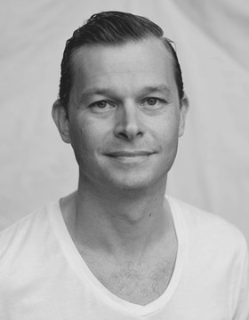
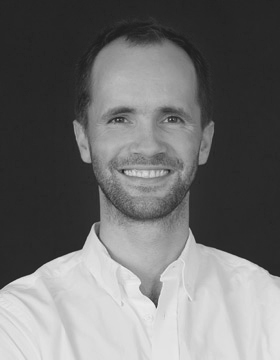

Unique brands in niche consumer goods categories.
Learn More
Hello, we are Ramblin' Brands.
We, and our partners, have long experience in creating and managing consumer goods brands all over the world, from the US to India and Japan to Azerbaijian.
Examples of brands we at RBL have worked with include Hugo Boss, Gucci, Vidal Sassoon, Wrigley’s and Coca-Cola. Our partners have worked with a wide range of brands, including Bacardi, Toyota, Bud Light, and Bang & Olufsen.
Our Story
Founded in 2011
The founders of Ramblin’ Brands, Mattias Hulting and Peder Wikström, used to work together at a large international company. in Sweden in the early 2000s. A desire to experience the world led them both to Asia. Mattias ended up in Japan and Peder in China. They would visit each other and stay on each other’s couches. During lively late night discussions they decided to set up a business together.
They were both passionate about beauty health and beauty care, but felt that most companies were to narrow minded and traditional in their thinking. Mattias’ and Peder’s vision was to start a company that would develop disruptive beauty brands. Peder had an idea on where to start…
Meet the Co-Founders

Mattias Hulting
co-founder
Mattias is from Sweden, but has spent half of his life outside his home country. After obtaining a Master’s Degree from the London School of Economics, Mattias worked 11 years at Procter & Gamble. During 6 of these years, he was based in Japan working across all Asian markets from Australia to India. He was one of the leaders of the global Vidal Sassoon brand, Finance Group Manager of the North-East Asia Hair Care portfolio, and led the work to bring acquired Wella Professional into P&G operations.
Mattias speaks Swedish, English, and Spanish fluently, manages Japanese well, and can survive on his Mandarin Chinese.

Peder Wikström
co-founder
Peder is from Sweden and has a Master’s Degree in Finance from the Stockholm School of Economics and Universität zu Köln. Before co-founding Ramblin’ Brands he spent seven years in China leading businesses in cities most foreigners have never heard of. As National Sales Manager at Oriflame Peder accelerated growth and turned China into Oriflame’s fastest growing market globally.
Leaving P&G in Scandinavia, Peder initially moved to China without ever having set foot there and unable to speak Chinese to start his first company – Ando China, which focused on industrial hardware and harbor supplies.
Peder speaks Swedish, English and German fluently and manages Mandarin Chinese well.
Say hello to your fantasy man today!